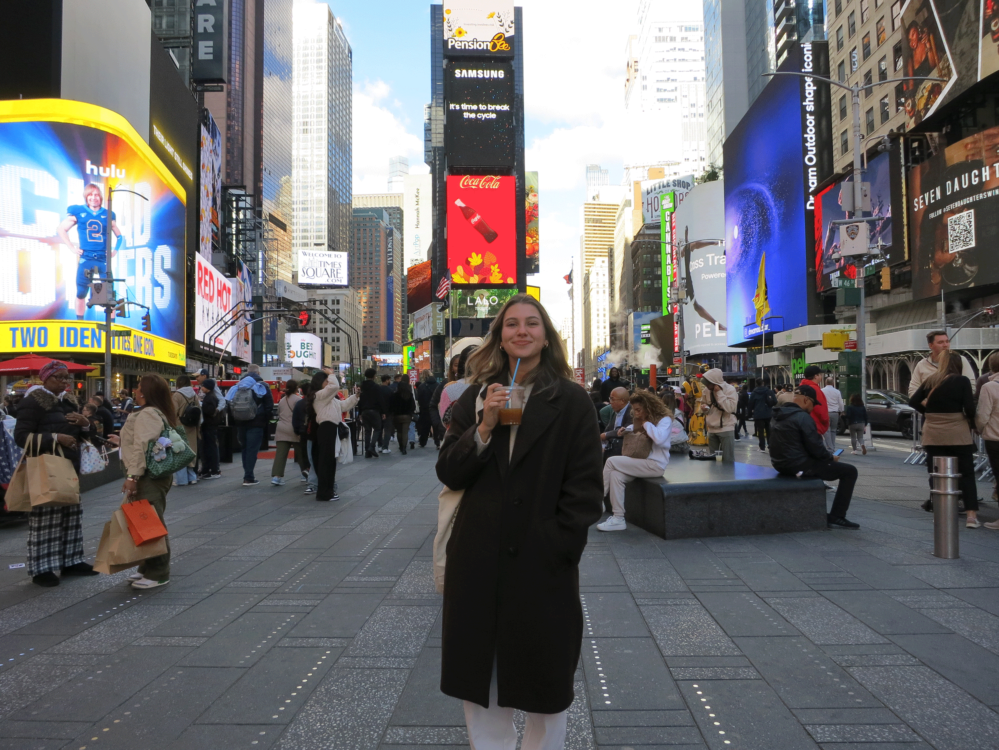
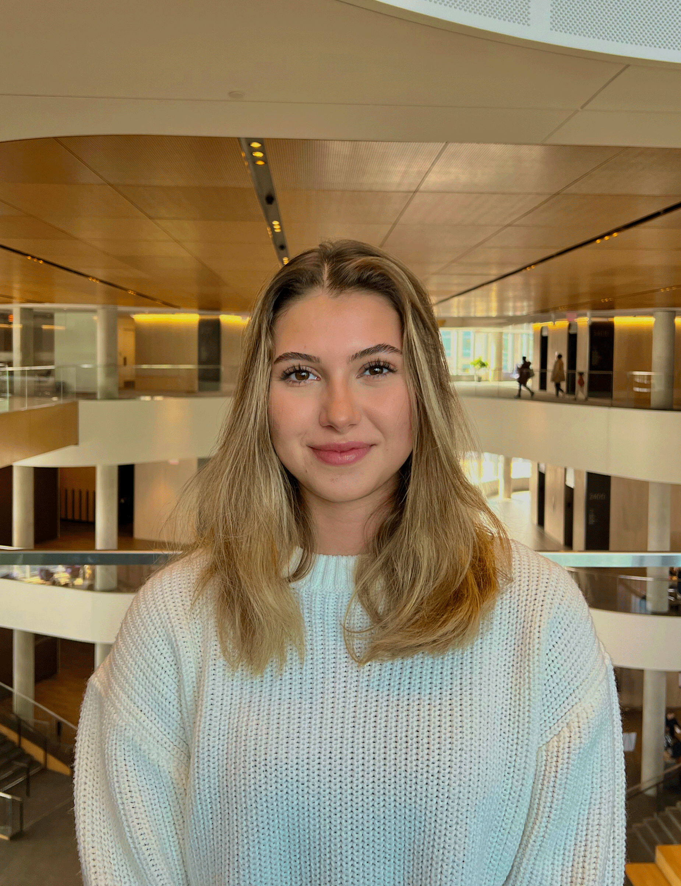

Hi, I'm Selin Orbay. I'm a junior at Northwestern University studying Computer Science with a concentration in Robotics and pursuing the Segal Design Certificate, which is a long way of saying I care equally about how things work and how they're made.
Northwestern's approach to "whole brain engineering" has become a part of who I am over the years. I believe that the best solutions come from people who can hold technical excellence and creative thinking at once. I think it's something I'd already started to believe before I had a name for it. The Segal Design Certificate isn't a hobby alongside my CS degree; it's the other half of how I think. I'm an engineer who designs, and a designer who builds things that have to work.

I'm drawn to the space where engineering gets physical: control systems, automation, hands-on builds.
I think in diagrams.
My approach to any problem starts by getting everything out of my head and onto a surface — diagrams, scenarios, failure modes — until I can see the shape of it clearly enough to start connecting the dots. I like problems that don't have obvious answers, and I like building things that have to actually work in the real world.
Outside of engineering, I sketch constantly, pen and paper for thinking, CAD for making. I've modeled vases, aquarium structures, things that sit somewhere between functional objects and design exercise. I came up through VEX Robotics, starting as a team programmer and eventually captaining an 80-person team.
The technical problems are rarely the hardest ones.
I value creativity, originality, and being someone people can count on. I take it seriously.